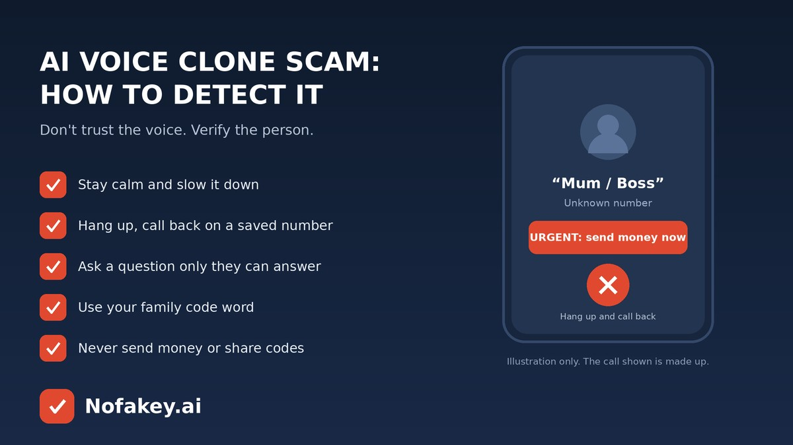

“Hello, it’s me. I’m in trouble. Please don’t tell anyone, just send the money now.” It sounds like your child, your brother or your boss. That is exactly the point. In an AI voice clone scam, criminals copy a real person’s voice and use it to make you panic. The good news: you don’t need to judge the voice to stay safe. You need a few habits that work even when the clone is perfect.
How an AI voice clone scam works
- The sample. Scammers collect a person’s voice from public videos, voice notes, podcasts or social posts. A short, clear clip may be enough for a convincing copy.
- The script. They pick a story that creates panic: an accident, an arrest, a lost phone, a stuck payment, a boss who needs a favour.
- The call. The cloned voice or a “helper” phones you, often from an unknown number, and pushes you to act before you think.
- The payment. You are asked to send money by transfer, UPI or another quick method, buy gift cards, or read out a one-time code.
Common voice clone scam stories
| Story | What the “voice” says |
|---|---|
| Family emergency | “I’ve had an accident,” “I’m in custody,” or “I lost my phone, use this new number.” Often adds “don’t tell Mum and Dad.” |
| Boss or colleague | “I’m in a meeting, pay this vendor now,” or “I need gift cards for a client.” |
| Bank or official | A calm voice says your account is at risk and asks for an OTP, PIN or app access. |
| Friend in need | A friend asks for a quick loan after “being stranded,” with a payment link or account number. |
How to detect it during the call
Listen for the pattern, not just the voice
- Pressure and secrecy. “Right now,” “don’t tell anyone,” “no time to explain.”
- An unknown number from someone who says their phone is lost, broken or stolen.
- A payment ask that is unusual for this person: gift cards, crypto, a new account, or a code.
- Evasive answers. The caller dodges simple questions or keeps the call short.
- Small audio oddities. Flat emotion, odd pauses, clipped words or a robotic tone. These can help, but a good clone may have none of them.
Then do this
- Stay calm and slow it down. Say you’ll call right back. A real person will understand.
- Hang up and call back on the number you already have saved, not the one that just called.
- Ask a private question that can’t be found online, such as a family detail or a shared memory.
- Use the family code word if you have one.
- Reach them another way. Message them, call someone who is with them, or contact their workplace.
- Send nothing and share no codes until you have confirmed it is really them.
Wondering whether a free tool can analyse a recording? See our guide to the free deepfake audio detector and its limits.
If you already sent money or shared a code
- Call your bank or payment app straight away and ask about stopping or recalling the payment. Speed matters.
- Block any card, account or app access you shared, and change affected passwords and PINs.
- Keep evidence: the number, call log, messages, screenshots and payment details.
- Report it to your national cybercrime or fraud reporting service and to your phone provider.
- Warn the person whose voice was copied and your family or workplace.
- Don’t feel ashamed. These scams are built to work on careful people. Fast reports limit the damage.
How to protect yourself and your family
- Agree a private code word for emergencies and keep it offline.
- Tell older relatives that a voice can be faked, and that calling back is never rude.
- Limit long public voice clips and review who can see your videos and voice notes.
- Don’t talk at length to unknown callers, and don’t say “yes” or confirm details to strangers.
- At work, use dual approval and call-back for payments and bank-detail changes. See brand protection against deepfake impersonation.
Voice scams often come with a text, email or link. Our guide to AI-generated scam emails covers the same habits, and you can paste any suspicious message into our free checker for a quick first read. It checks messages and links, not audio.
Frequently asked questions
What is an AI voice clone scam?
It is a scam where criminals use AI to copy a real person’s voice and phone you pretending to be a relative, boss or official, usually asking for urgent money, codes or account details.
How can I detect an AI voice clone scam during a call?
Do not rely on the voice. Notice urgency and secrecy, hang up, and call the person back on a number you already have. Ask a question only the real person would know, or use a family code word.
How do scammers get someone’s voice?
Often from public videos, voice notes, podcasts or social posts, and sometimes from a short recorded call. A short, clear sample may be enough for a convincing copy.
What should I do if I already sent money after a voice clone call?
Contact your bank or payment app immediately and ask about stopping or recalling the payment, report it to your national cybercrime or fraud reporting service, keep call logs and screenshots, and warn the family member whose voice was copied.
Can I protect my voice from being cloned?
You cannot fully prevent it, but you can reduce risk by limiting long public voice clips, tightening social media privacy and not speaking at length to unknown callers.
Conclusion
A cloned voice can fool anyone, so the safest defence isn’t a sharp ear. It is a routine: pause, hang up, call back on a saved number, ask something only the real person knows, and never send money or codes because of a call alone. Find more guides on the Nofakey.ai blog.
Got a suspicious message, link or email to check?
Run it through the checker